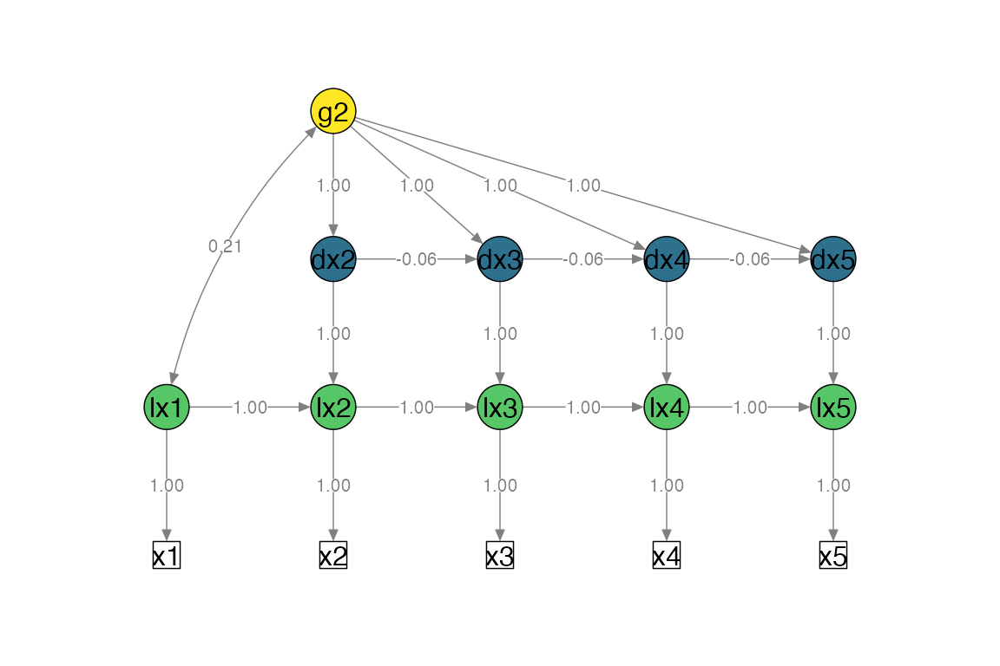

vignettes/v2-path-diagrams.Rmd
v2-path-diagrams.RmdThis function is work in progress and can only plot univariate and bivariate LCSMs that were specified with fit_uni_lcsm() or fit_bi_lcsm(). Modified LCSMs will probably return errors as the layout matrix that gets created by this plot function only supports the specifications that can be modelled with this package. The input arguments for plotting a simplified path dioagram are:
lavaan_object,lavaan_syntax and ,lcsm indicating whether the LCSM is “univariate” or “bivariate”Optional arguments can be used to change the look of the plot, for example:
lcsm_colours can be used to highlight the different parts of the latent change score model
Further arguments can be passed on to semPlot::semPaths(), for example:
what, “path” to show unweighted gray edges, “par” to show parameter estimates as weighted (green/red) edgeswhatLabels, “label” to show edege names as label or “est” for parameter estimates, “hide” to hide edge labels
# Fit bivariate lcsm and save the results
uni_lavaan_results <- fit_uni_lcsm(data = data_uni_lcsm,
var = c("x1", "x2", "x3", "x4", "x5"),
model = list(alpha_constant = TRUE,
beta = FALSE,
phi = TRUE)
)
#> Warning in lav_data_full(data = data, group = group, cluster = cluster, : lavaan WARNING: some cases are empty and will be ignored:
#> 239
# Save the lavaan syntax that is used to create the layout matrix for semPlot
uni_lavaan_syntax <- fit_uni_lcsm(data = data_uni_lcsm,
var = c("x1", "x2", "x3", "x4", "x5"),
model = list(alpha_constant = TRUE,
beta = FALSE,
phi = TRUE),
return_lavaan_syntax = TRUE)
# Plot the results
plot_lcsm(lavaan_object = uni_lavaan_results,
lavaan_syntax = uni_lavaan_syntax,
edge.label.cex = .9,
lcsm_colours = TRUE,
lcsm = "univariate")
# Fit bivariate lcsm and save the results
bi_lavaan_results <- fit_bi_lcsm(data = data_bi_lcsm,
var_x = c("x1", "x2", "x3", "x4", "x5"),
var_y = c("y1", "y2", "y3", "y4", "y5"),
model_x = list(alpha_constant = TRUE,
beta = TRUE,
phi = FALSE),
model_y = list(alpha_constant = TRUE,
beta = TRUE,
phi = TRUE),
coupling = list(delta_lag_xy = TRUE,
xi_lag_yx = TRUE))
# Save the lavaan syntax that is used to create the layout matrix for semPlot
bi_lavaan_syntax <- fit_bi_lcsm(data = data_bi_lcsm,
var_x = c("x1", "x2", "x3", "x4", "x5"),
var_y = c("y1", "y2", "y3", "y4", "y5"),
model_x = list(alpha_constant = TRUE,
beta = TRUE,
phi = FALSE),
model_y = list(alpha_constant = TRUE,
beta = TRUE,
phi = TRUE),
coupling = list(delta_lag_xy = TRUE,
xi_lag_yx = TRUE),
return_lavaan_syntax = TRUE)
# Plot the results
plot_lcsm(lavaan_object = bi_lavaan_results,
lavaan_syntax = bi_lavaan_syntax,
lcsm_colours = TRUE,
whatLabels = "hide",
lcsm = "bivariate")